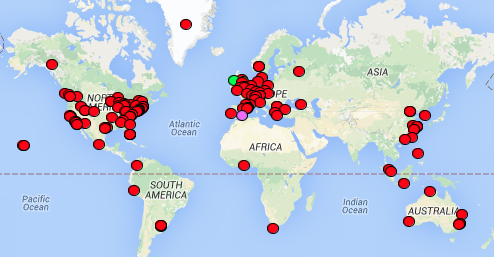
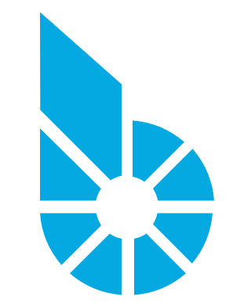
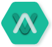
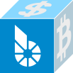
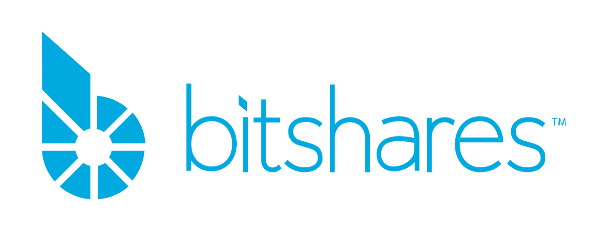
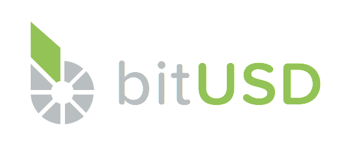
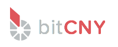

BitShares is the flagship Bank & Exchange DAC. It serves to establish
a new financial platform on which tomorrow's apps will be built.
BitShares for the People
Your digital Fort Knox. Be your own bank.*
Assets can never be stolen or seized.
PayPal, without the middleman.
Transfers around the world, for pennies.
Freedom of choice.
Use dollars, gold, silver, and more.
BitShares for Business
Value-stable Assets.
The power of crypto, without the volatility.
Crowdfunding.
Ussue your own shares or IOUs.
For Investors and Traders
Decentralized Exchange.
Trade in a free market, using assets you own with no counter-party risk.
Don't be a laggard. BitShares is
profitable freedom, and we need your help to reach critical mass.
Graphic by Pnautilus on Wikipedia
Join the BitShares Community

BitShares is an open-source project community with members around the world.
Where to find us:
 bitsharestalk.org
reddit.com/r/bitshares
bitshares.meetup.com
Purchase BTS:
 metaexchange.info
 blocktrades.us
More Information:
bitshares.org
Open-source,
decentralized,
auditable DACs
bank & exchange
voting
record labels
gambling
insurance

An open call for early adopters and visionary investors.
What is a DAC?
Decentralized Autonomous Community
DACs are like robotic, unmanned companies.
The first pilot project was launched June 2014.
DAC features, by design:
Cannot be shut down or censored
Your assets cannot be seized
No central servers (à la BitTorrent)
Self-healing networks
Operated by those who participate—
no single company controls it
BitShares DAC: Bank & Exchange
Counterparty-free bank & exchange featuring "stablecoins"
and user-issued assets.
Follow My Vote: Transparent Voting
Auditable, verifiable and hack-proof voting.
We believe open-source is the only way.
Music DAC: Decentralized Record Labels
Record Label, Discovery & Streaming Service.
Fans pay (and even invest in) artists directly!
Play DAC: Provably-fair Gambling
Decentralized and unstoppable gaming for all.
What's next?
Prediction & Insurance Markets
Peer-to-peer ridesharing
Decentralized DNS
SkyNet DAC?
The sky is the limit. Any business model can be modelled as a DAC—and one day, it will be.
What is DPOS?
Delegated Proof of Stake
DPOS is the open-source protocol used to create self-governing apps (i.e., DACs).
The blockchain is a DAC's internal database.
Every ten seconds, all pending transactions are packaged into a block and added to the chain.
Asset tokens are freely exchangeable on the blockchain.
They can represent currencies, commodities, shares, loyalty points, coupons, credits, receipts, vouchers, and more.
Three classes of entities power a DPOS blockchain:
Witnesses: network maintainers
Elected by shareholders to validate and sign transactions and produce them into blocks.
Workers: crowdhired contractors
Developers, marketers, and others are paid by the DAC itself via dilution.
Delegates: the "board of directors"
Can change any blockchain parameters given 2 weeks' notice, during which shareholders can veto any such change.
Market Pegged Assets (MPAs)
The Currency of BitShares


MPAs (or "BitAssets") are digital asset tokens that eliminate the burden of price volatility. bitUSD, bitCNY and bitGOLD will always trade near par value for the dollar, yuan and gold on crypto-currency exchanges worldwide.
MPAs are derivatives enforced by smart contracts and backed by 300% collateral.
BitAssets help businesses and shoppers avoid the hassle of transfering holdings back and forth between crypto and cash to evade costly price fluctuations.
User-Issued Assets (UIAs)
Stock Distribution and Rewards Programs
You can issue your own tokens which can be traded freely within BitShares.
Some use cases are to facilitate crowdfunding, token controlled access to content,
company stock distribution, and IOUs for auditable and secure AML / KYC compliant gateway services.
Base Token (BTS)
For Techies and Investors
The base token BTS gives the platform real-world value and thus allows the creation of collateralized assets.
Holders of BTS own a part of BitShares, and a stake in its success.

 bitshares.meetup.com
bitshares.meetup.com